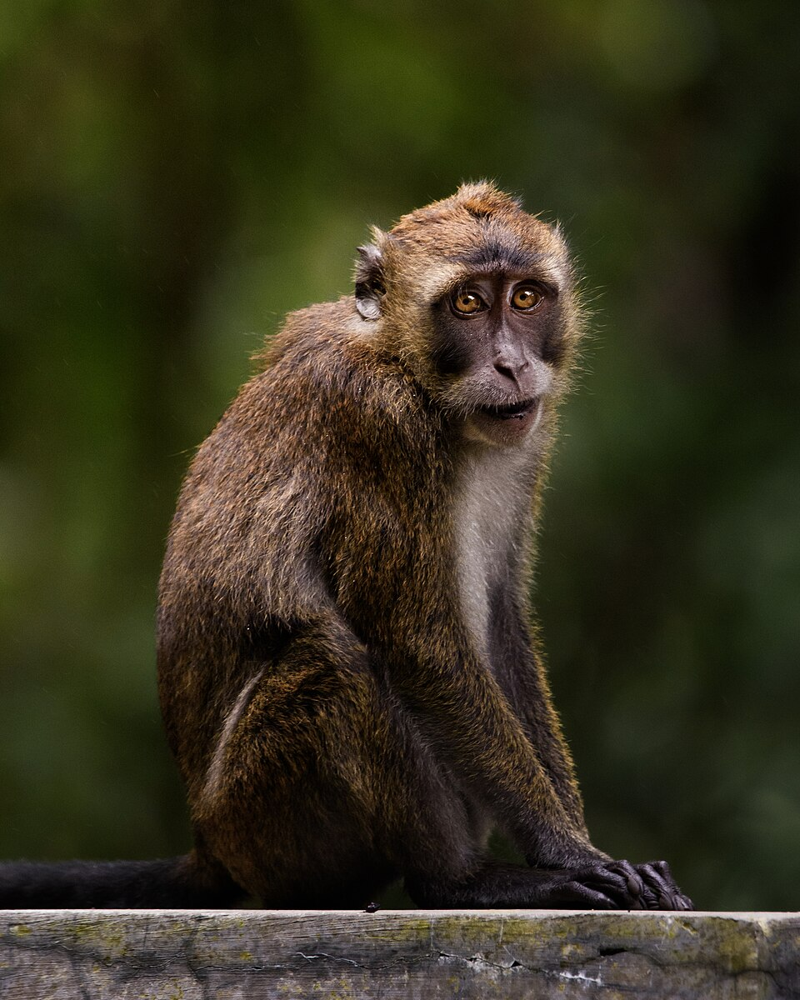

Protecting Wildlife
From Animal Testing
Advocating for ethical research alternatives and the protection of wild primate populations in the Philippines. It is time to replace outdated animal testing with modern, humane science.

Media Credit: Public Domain via Wikimedia Commons (Used under Educational Fair Use).
Understanding the Issue
Exploring the ecological footprint, human drivers, and non animal scientific alternatives shaping the future of research.
Definition & Scope
Animal testing involves using live vertebrate animals for scientific research and safety trials. It becomes an environmental issue when wild species are trapped, bred, or exported from natural habitats, and when laboratory operations generate biological waste and carcass disposal hazards.
Conservation Status
Due to decades of legal export for research (111,000 to 147,000 subjects from 1980 to 2019), domestic trafficking, and forest loss, the native Philippine long tailed macaque is now officially reclassified as Endangered.
Forest Canopy Impact
As primary seed dispersers, removing non human primates from tropical forests degrades natural tree regeneration, disrupts local food webs, and places cumulative survival pressure on remaining wild troops.
Systemic Drivers
Understanding the economic, corporate, and institutional factors that perpetuate the primate trade for biomedical research.
Rural Exploitation
High commercial export values ranging from $2,500 to $10,000+ USD per subject create strong financial incentives that exploit rural economic scarcity. Local residents in island provinces receive low cash payouts to trap wild troops, which are then funneled into commercial breeding facilities and export pipelines.
Corporate & Global Demand
Multinational pharmaceutical firms and Contract Research Organizations (CROs) sustain continuous global demand to satisfy traditional pre clinical safety protocols. Foreign market contracts prioritize large scale primate supply chains, driving persistent commercial procurement of Philippine wildlife.
Institutional Transition Barriers
Local academic and research institutions face significant capital gaps, limited access to specialized equipment, and regulatory inertia. Adopting human relevant Non Animal Alternatives (NAMs), such as microfluidic organ on a chip devices and computer models, requires upfront investments that delay systemic reform.
Source & Credit: Systemic trade model adapted from Sy (2024) data under Educational Fair Use.
Ready to make a difference?
Support cruelty-free initiatives, advocate for non-animal testing alternatives, and support local legislative efforts through the Philippine Animal Welfare Society (PAWS).
Support PAWSReferences
Department of Agriculture – Bureau of Animal Industry. (1999). Rules and regulations on the conduct of scientific procedures using animals (Administrative Order No. 40, Series of 1999). Supreme Court E-Library. https://elibrary.judiciary.gov.ph/thebookshelf/showdocs/10/39491
Philippine Association for Laboratory Animal Science. (2025). Code of practice for the care and use of laboratory animals in the Philippines. https://main.palas.org.ph/
Republic Act No. 9147. (2001). Wildlife resources conservation and protection act of the Philippines. Department of Environment and Natural Resources. https://jur.ph/law/summary/denr-streamlining-procedural-guidelines-pursuant-to-the-joint-denr-da-pcsd-implementing-rules-and-regulations-of-r-a-9147
Republic Act No. 10631. (2013). An act amending certain sections of Republic Act No. 8485, otherwise known as "The Animal Welfare Act of 1998". Supreme Court E-Library. https://elibrary.judiciary.gov.ph/thebookshelf/showdocs/2/58330
Sy, E. Y. (2024). Analysis of the international legal trade and domestic trafficking of long-tailed macaque (Macaca fascicularis) in the Philippines. Journal of Nature Studies, 24(1), 1–14. http://www.journalofnaturestudies.org/files/52/1-14_Sy_Analysis%20Trade%20Trafficking%20Long-Tailed%20Macaque.pdf